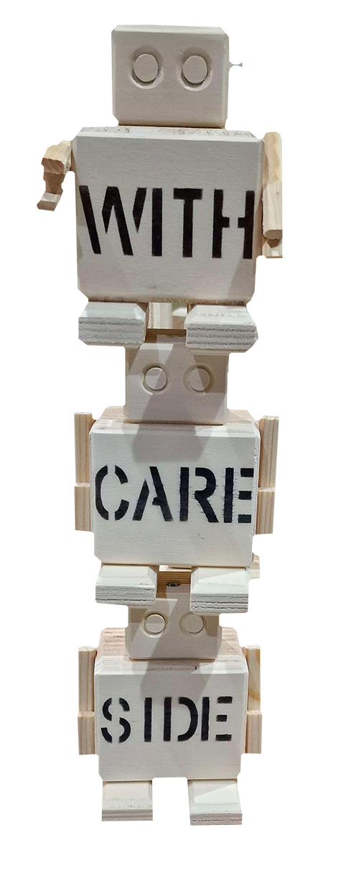

Mijn favorieten
Er bestaan duizenden Rijkswachters waarvan elke uniek is. Hierom wil ik een paar van mijn favorieten soorten laten zien! Hier rechts zijn de Rijkswachters met de bolde tekst op de voorkant!
Deze Rijkswachter is een favoriet omdat hij origineel een tand van een narwal beschermde!
Check the code! RW 15950
Deze wachter is 1 van de kleinste bots met een lampje op de bovenkant. Dit geeft deze bot een waarde van wel $80!